ULALÁ
Sales-force mobile app redesign
This project was a comprehensive mobile application redesign for The Pocket, a critical mobile application enabling a multinational's field sales representatives to register and manage complex product sales. My work focused on developing a more intuitive UX that empowers sellers to achieve higher sales effectiveness while reducing data entry errors and cognitive load.
Stakeholders: Managers and salesforce.
Date
2017
Place
Bogota, Colombia
Date
Exploratory/Generative
Role
UX Consultant
{kind=link}
Research Background
The core challenge was to modernize The Pocket, the sole technology used
by the company’s vast field
salesforce for over 15 years, which operated on dedicated, outdated hardware.
The legacy system created significant friction across the sales process.
Thus, the project's goals included:
- Bridging the Technology Gap by delivering a modern, high-performance platform
- Empowering Sellers through effective self-management of routes and goals
- Driving Business Strategy by seamlessly integrating key metrics and company strategies into the daily workflow
{kind=link}
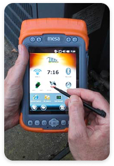
Project Impact
The successful redesign influenced the daily selling experience for thousands of field employees across Latin America. The primary impact was achieved by replacing the restrictive legacy system with an agile mobile application that fundamentally changed the seller experience:
- Maximized operational agility by enabling on-the-run decision-making
- Increased seller autonomy by giving users control over their route planning and core task
- Boosted sales effectiveness by using an implicit recommendation system and contextual KPIs to enforce business strategy.
Research Methodology
This project followed a full-cycle Double Diamond methodology to ensure solutions were grounded in real-world user needs and supported critical business objectives.
{kind=link}
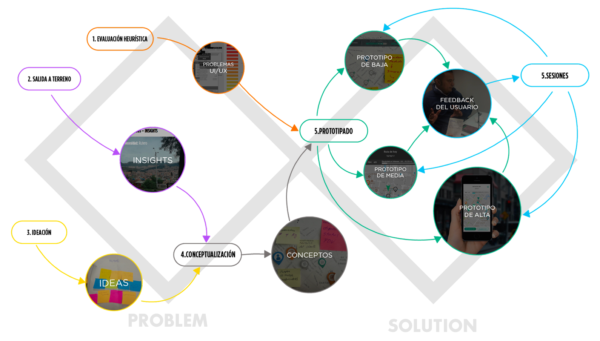
Phase 1: Problem Definition (Discover & Define)
The initial phase was focused on understanding the current context and defining the core problems of the legacy system:
- Divergence (Discovery): We conducted exploratory research to map the seller's current workflow and identify friction points. This included a Heuristic Evaluation of the legacy device and extensive User Journey Definitionthrough field research, including Shadowing (10 participants) and in-depth Interviews (15 participants) with sellers across various levels.
- Convergence (Definition): Findings were prioritized through a Priority Sorting session with stakeholders to align on critical user needs versus business constraints. This process culminated in the clear identification of Needs and Requirements for the new mobile application, formally concluding the "Define" stage.
Phase 2: Solution Development (Develop & Deliver)
The second phase transitioned the defined requirements into a validated design solution:
- Divergence (Development): We moved from abstract requirements to tangible concepts via Conceptualization and Ideation sessions. The output included high-level design guidelines for the new mobile architecture.
- Convergence (Delivery): The solution was formalized through iterative Prototyping (low-fidelity to high-fidelity) and rigorous User Testing.
Results
The initial phase of the research yielded a thorough evaluation of both, the Pocket’s usability and the user profiles.
Heuristic Evaluation
{kind=link}
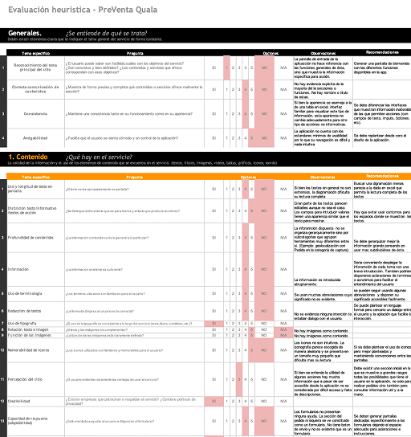
User profiles

The resultant user journeys provided a framework to focus our analysis on three key operational areas:
- The core sales processes and workflows executed by representatives
- The Salesforce tools and integrated resources utilized
- Identification of critical process friction points and the corresponding system's internal processing requirements
User Journey
{kind=link}
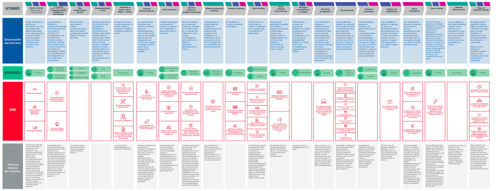
Key Research Findings (Phase 1)
The comprehensive research in Phase 1 identified critical friction points and opportunities that became the foundation for the redesign strategy:
- Usability Hinderance vs. Corporate Control: The legacy system’s architecture prioritized corporate control and surveillance over seller efficiency. This restrictive design led to slow sales registration, frequent data entry errors, and a lack of contextual information access (e.g., inventory, goals), significantly hindering productivity.
- Need for Agility and Self-Management: Sellers are highly loyal and motivated, but their daily operations are characterized by constant, unexpected changes. The current rigid system fails to support this reality. The new solution needed to transition from a mandatory reporting tool to a supportive platform that affords operational agility and empowers sellers to manage their routes and handle unforeseen circumstances autonomously.
Iterative Prototyping
The design process involved an iterative cycle of prototyping and testing to rapidly validate key design hypotheses and minimize risk:
{kind=link}
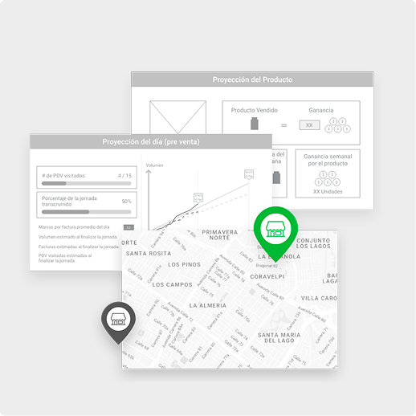
Low-Fidelity Prototyping (Paper/Sketch)
We began with paper prototypes to simulate critical workflows, such as route navigation and sales transactions. This allowed for quick, cheap validation of the information architecture and conceptual flow with stakeholders before any investment in digital assets.
{kind=link}
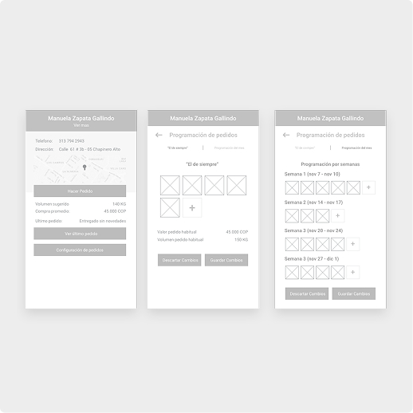
Mid-Fidelity Prototyping (Wireframes)
These static digital wireframes focused on screen structure, content placement, and interaction elements. This phase refined the navigational flow and ensured all requirements were represented before committing to visual design.
{kind=link}
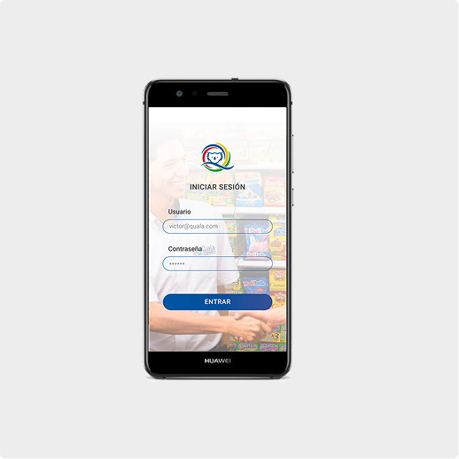
High-Fidelity Prototyping (Adobe XD)
The final stage involved creating a detailed, interactive prototype in Adobe XD. This prototype included a basic visual design, detailed micro-interactions, and final language, which was used for the final round of user testing to validate usability before handover.
User Testing
Testing encompassed usability checks on core workflows, as well as validation of the concept and language style, ensuring the final deliverable was a tested, production-ready solution ready for deployment to the field sales force.
{kind=link}
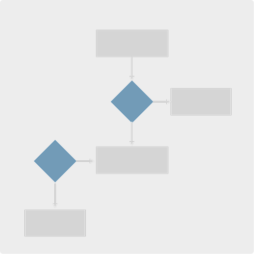
Usability & Navigation
Validating the new information architecture and core task flows, such as sales registration and customer data access, to ensure efficiency.
{kind=link}
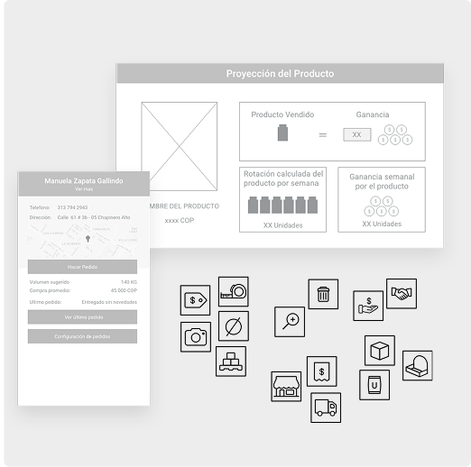
Concept & Language
Ensuring the new terminology, error messages, and motivational concepts were clear, relevant, and well-received by the field salesforce.
{kind=link}
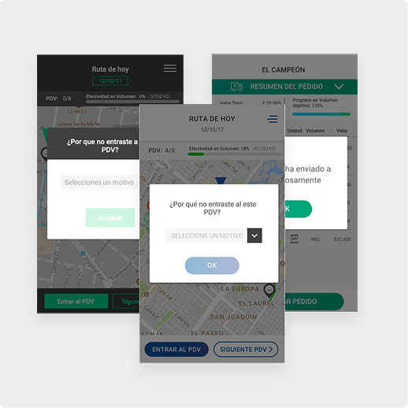
Visual Style
Assessing the proposed design language, aesthetics, and overall mobile experience to ensure modernity, legibility, and usability on mobile devices (Page 16 of the deck).
Project Deliverables
User Flow Diagrams: Mapping of the core application components sorted by profiles, tools, and navigation logic.
Wireframes & Mockups: Screen layouts and component usage across the five main functional components identified in the requirements phase.
Style Guide: Suggested typography, color palettes, component libraries, and visual guidelines to ensure consistency and scalability across the new mobile application.
{kind=link}
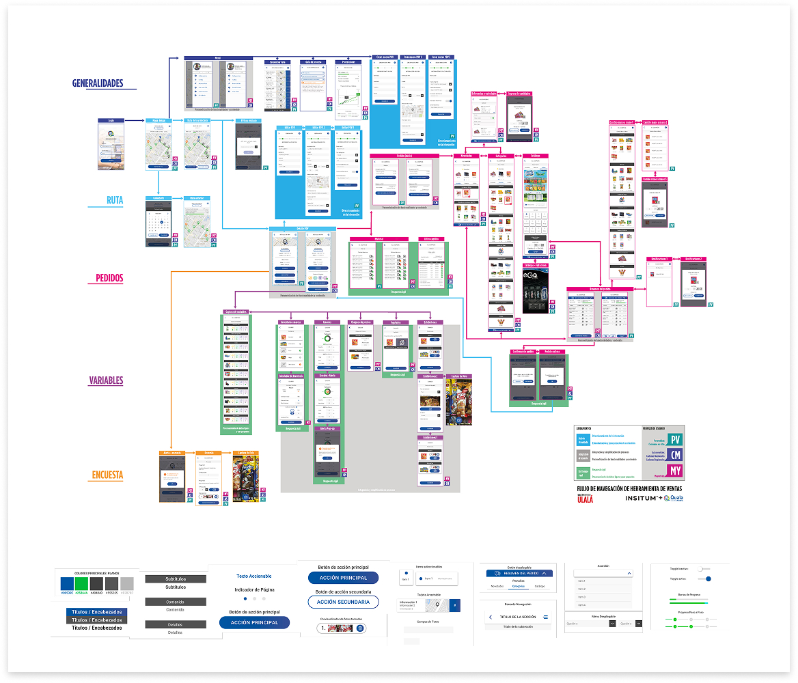
Conclusion and Strategic Recommendations
The redesign successfully transformed 'The Pocket' from a rigid legacy reporting
tool into an agile, supportive mobile application. The key conclusion is
that empowering the seller through contextual information and operational
autonomy is the most effective path to improving sales efficiency and adherence
to company strategy.
The strategic recommendations for the next phase of development were:
{kind=link}
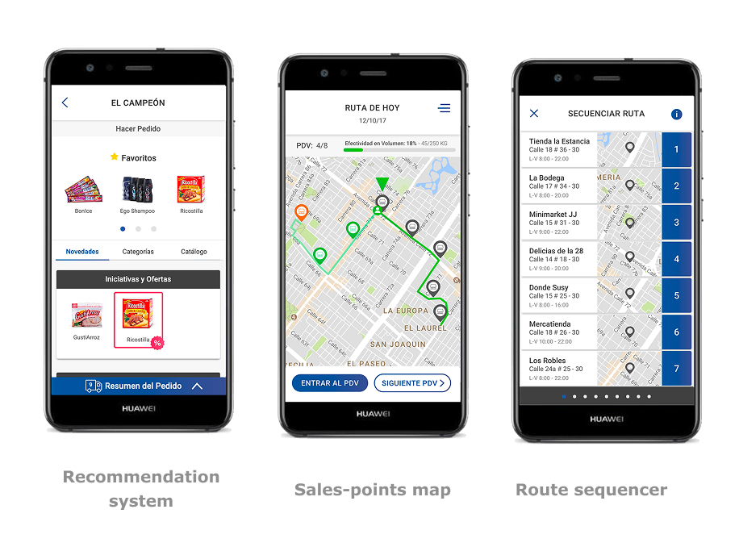
Support Change and Adaptability: The system must afford changes on the run (e.g., dynamic route adjustment, on-the-spot order modification) to support sellers' daily analysis and decision-making in the field.
Increase Seller Control and Freedom: Transition the system's focus from control and surveillance to a tool for self-management, providing immediate, relevant feedback to allow sellers to manage their own metrics and priorities.
Afford Guidance via Implicit Recommendations: Integrate company policies and guidance through an implicit recommendation system that suggests optimal selling paths, product up-sells, or next-best actions based on contextual data, making strategic adherence seamless rather than mandatory.